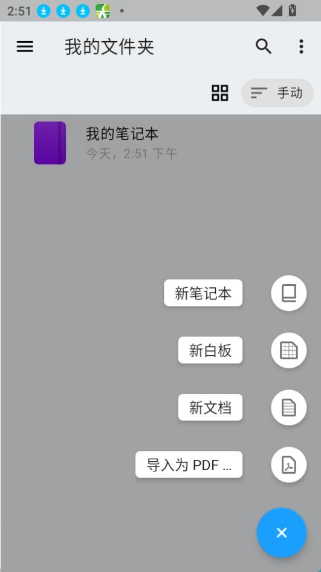

Nebo 到底值不值得掏钱？一份手写笔记软件的付费账本
从免费版够不够用、主力用户能省多少时间，到同价位替代方案，把 Nebo 这笔账算得明明白白，谁该买、谁该等等、谁永远不用付。
开头：这个问题我问了自己半年
坦白说，我犹豫了很久。
一边是 iPad Pro 上 Apple Pencil 悬停着、指尖还沾着刚写完的草稿——这一切的主角，就是 nebo官网；另一边是"每月订阅"四个小字晃得我眼睛疼。毕竟我不是学生——没有期末笔记要整理、没有海量课堂录音要转写、没有教授要求交 Word 版的作业。那么问题来了：Nebo 到底值不值得掏钱？
这篇就是我的决策账本。不推销、不劝退，只把数字和场景摆出来，你自己对号入座。
一、定价拆解：免费版给什么，付费版多什么
先说一个关键事实——Nebo 现在在不同平台的定价策略不完全一样。Windows 上走买断制，iOS 和 Android 上订阅+买断并行。我翻了一下 nebo文档 里的说明，没给出精确的价格数字，但从功能边界可以推断出两档的差距有多大。
免费版给的东西
免费版是一个"能用的笔记 App"——不是阉割到只能看的那种，而是真的可以写、可以存、可以导出。手写笔势里最常用的几项（勾除删除、笔势下划线、完美形状）应该都能正常工作，手写转文字也不至于完全锁死，大概率有次数或页码的限制。
付费版解锁的核心增量
付费版的价值点集中在三个地方：
AI 功能套件——把手写转成文字之后，AI 能帮你总结、生成测验题、做复习闪卡、解释术语。这一套组合拳（手写 → 转文字 → AI 整理）是 Nebo 文档里反复提到的"最强大工作流"。
高级导出与转换——整页/整本的批量转换、LaTeX 数学公式导出、PPTX 文档模式。免费版可能只能导 PDF 和图片，付费才能导 Word 这种"能交给别人"的格式。
多设备云同步——这是个不确定项，但订阅制产品通常会把云端同步作为付费锁。Windows 买断制可能在这方面有不同的处理逻辑。

二、分三类人算账
算账的核心公式很简单：你为 Nebo 省下的时间 × 你一小时值多少钱 > Nebo 的价格？ 不同使用强度的人，这个数字天差地别。
轻度用户：偶尔记记，免费版大概率够用
如果你是下面这种情况：
- 每天手写不超过 30 分钟
- 主要用途是临时记下灵感、开会随手画几页
- 导出需求很低，偶尔截个图发微信就算了
- 没有跨设备同步的刚需
免费版的勾除笔势、笔势下划线、手写转文字的基础功能已经覆盖了核心场景。勾除笔势这一项——"写错了划一道继续写"——确实是 Nebo 与其他笔记 App 拉开差距的地方（对比传统笔记 App 每删一次要切橡皮、擦除、切回笔、重写至少 4 步，Nebo 是 1 步），但如果你的笔记量本来就不大，这 3 步的节省也不至于让你觉得"不付费人生不下去"。
轻度用户的决策：先免费用三个月。如果你在试用期内因为"今天要转这 20 页手写笔记成 Word"或者"这个 AI 总结确实帮我省了半小时"而挠头，那时候再考虑付费。否则，继续免费，挺好。
主力用户：每天开，每笔钱都值得
主力用户通常是学生或研究者。你如果每天手写 1~3 小时、每周需要整理课程/论文笔记成可分享的文档、期末要把一学期的手写内容批量转成 Word 交上去——Nebo 付费版就是明显划算的。
算一笔时间账：假设你有 100 页手写课程笔记要在期末转成 Word。装一个官方下载的 Nebo，用它的整本转换功能，导出时自动转文字，标题、列表、数学公式全部保留，你可能 10 分钟搞定。如果不用 Nebo，你要么逐页套索局部转换（每页至少 1 分钟，100 页就是 100 分钟），要么拍照用其他 OCR 工具（识别率更低，后期还要手动改），要么干脆放弃整理。
如果 Nebo 的 AI 闪卡功能正好撞上你的复习习惯（手写重点 → AI 生成闪卡 → 睡前刷一遍），那它的价值就不止是"省时间"，而是改变了你的复习方式。
主力用户的每单位时间成本怎么算？以一个月订阅费用除以 30 天再除以每天你用 Nebo 的小时数，假设每天 2 小时，那每小时的成本就是几分钱——这比一杯奶茶便宜多了。
重度用户：平板就是你的桌面，买断可能更划算
重度用户是那种 iPad + Apple Pencil 根本就是主力生产力工具的人——可能是设计师、是经常要画草图的产品经理、是需要在平板上写论文写代码的自由职业者。
这一类人要考虑的不是"值不值"，而是"选订阅还是买断"。订阅制的好处是持续更新和云端同步，买断制的好处是一次性掏钱之后永远免费。如果你打算用 Nebo 超过两年，买断大概率更划算。但 iOS 端的买断价如果已经接近两年订阅的总价，那不如先订阅用着，等 Nebo 出新版本再考虑要不要永久买断——毕竟 MyScript 改名改定价策略不是一次两次了。
三、不付这笔钱的替代方案
看完上面还在犹豫？没关系，不花钱也是可以的，只是要接受一些代价。
替代 1：继续用免费版 + 降低预期。把 AI 功能、高级导出、多设备同步这些东西从"我需要"改成"我没有也能活"，专注用好勾除笔势和手写转文字的免费配额。很多人其实一辈子都不会触及付费版的边界，免费版真的够。
替代 2：用 OneNote / GoodNotes / Notability 这类替代品。OneNote 免费，手写转文字做得不如 Nebo 强但胜在生态完整；GoodNotes 买断制，手写体验很好但没有 Nebo 那种"笔势即编辑"的丝滑感；Notability 也是买断，主打录音+手写同步，但勾除这种核心笔势它做得没 Nebo 好。问题是，这些替代品里没有一个能同时做到"不切工具就能编辑"和"手写转文字 + AI 整理"这两条——要么牺牲编辑效率，要么牺牲后期整理能力。
替代 3：降低手写频率。能打字的地方尽量打字，实在要手写的场合就用系统自带的备忘录或者 iPadOS 的随手写功能。代价就是你失去了手写的自由感和"划掉重写"的那个节奏——但如果你本来就不爱手写，这个代价比一个付费订阅便宜多了。
四、结论：三秒钟对号入座
算账到此为止。最后给一个可以直接用的结论表：
| 你是 | 决策 | 一句话理由 |
|---|---|---|
| 学生/研究者，每天手写 1+ 小时 | 闭眼付费 | 整本转换 + AI 闪卡省的时间值回票价 |
| 平板就是主力生产力工具 | 优先买断 | 两年以上使用周期，买断比订阅划算 |
| 偶尔记记、主要用打字 | 永远免费 | 勾除笔势好用，但不至于让你掏钱 |
| 免费用户、还没被锁过配额 | 再等等 | 等免费版的转换次数真的不够了再说 |
我自己最终的决定是先订阅一个月试试 AI 闪卡——期末复习季正好能用上。如果 AI 整理完笔记真的让我少花了两三个小时背书，那这笔钱就值了；如果没感觉，退订就行。
这就是付费账本的核心：不预设值不值，用一个月的真实使用场景去验证。